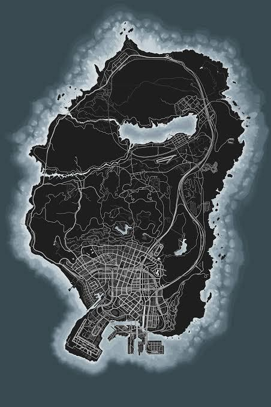

Bienvenue à Los Santos
VIVEZ
SANS LIMITES
Trois destins. Une ville sans pitié. Entrez dans le monde ouvert le plus iconique de tous les temps.
L’histoire
UNE VILLE.
TROIS DESTINS.
Quand un jeune arnaqueur, un braqueur de banque à la retraite et un psychopathe terrifiant se retrouvent mêlés aux éléments les plus dangereux de la pègre, ils doivent réussir une série de coups audacieux pour survivre.
Rencontrer les protagonistesÉtat deSan Andreas
34°03′N 118°15′W
Explorez San Andreas
TOUT UN ÉTAT
À CONQUÉRIR.
De la frénésie de Los Santos aux reliefs sauvages du nord, découvrez les lieux emblématiques de San Andreas.
Tous les lieuxVilleNatureZones sensibles

1 · Los Santos2 · Vinewood 3 · Sandy Shores4 · Mont Chiliad 5 · Paleto Bay6 · Fort ZancudoLes protagonistes
CHANGEZ DE
PERSPECTIVE
Découvrez Los Santos sous trois angles radicalement différents en sélectionnant un personnage.
Le professionnel
Michael
“Tout semblait parfait. Mais le passé finit toujours par vous rattraper.”
SpécialitéStratège
L’ambitieux
Franklin
“Il faut parfois changer de route pour atteindre le sommet.”
SpécialitéPilote
L’imprévisible
Trevor
“À Los Santos, le chaos n’est pas un accident. C’est un mode de vie.”
SpécialitéInstinct
GTA Online
VOTRE VILLE.
VOS RÈGLES.
Entrez dans un univers en ligne dynamique et en constante évolution, où vous pouvez passer du petit délinquant au roi d’un empire.
Los Santos vous attend
PRÊT À PRENDRE
LE CONTRÔLE ?
Disponible sur PlayStation 5, Xbox Series X|S et PC.
Choisir une édition